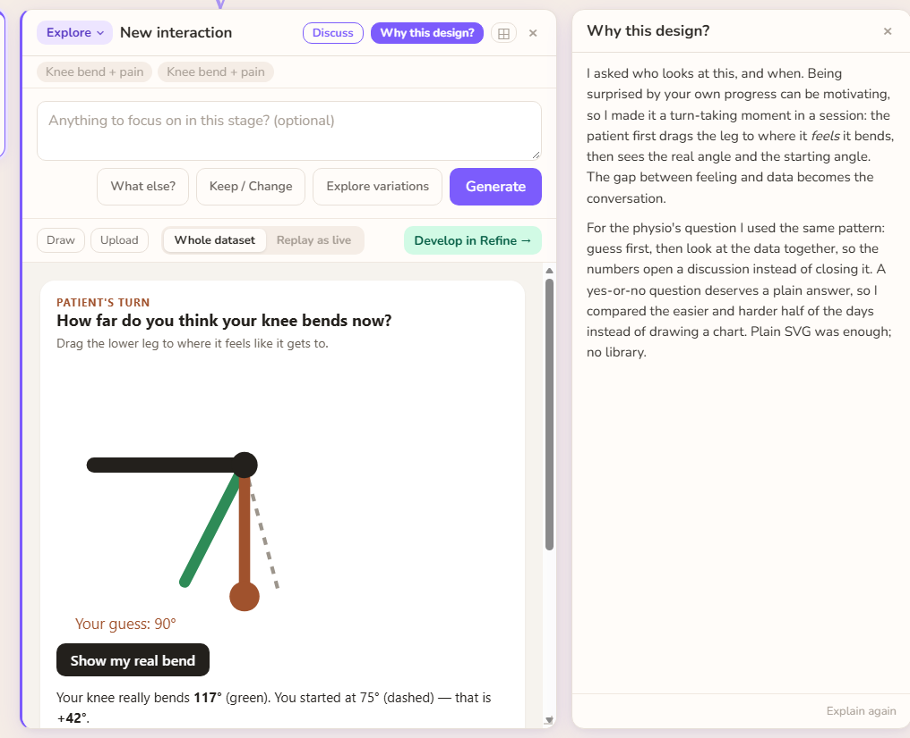
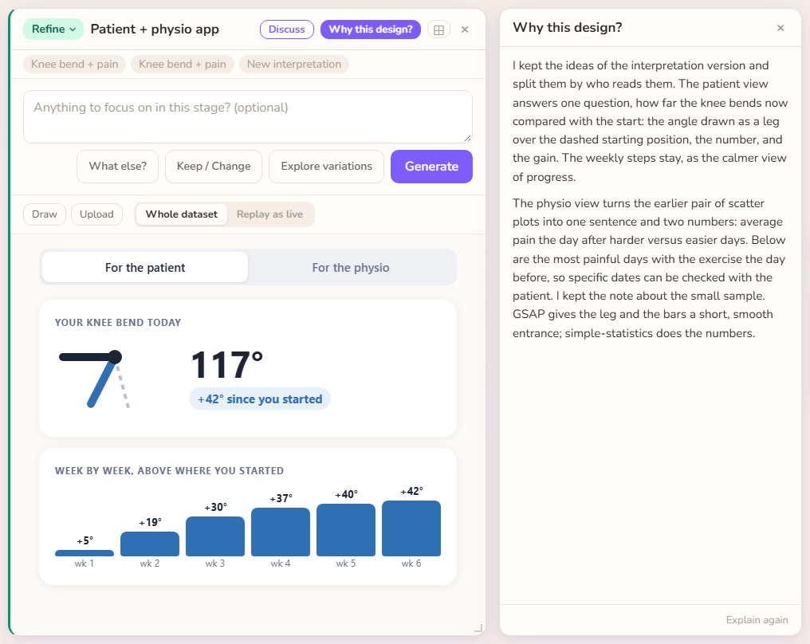

BioSketch
An LLM-programming tool for non-linear, slow design exploration with biodata
- Context
- M.Sc. thesis in Human–Computer Interaction (15 hp), then Research Assistant work, Department of Informatics, Umeå University, 2026
- Supervisor
- Dr. Pedro Sanches
- Methods
- Human–AI co-creation sessions, think-aloud protocols, artifact analysis
- Output
- Full paper submitted to Nordes 2027 (under review)
- Code
- github.com/leonelligabriele-ops/design_exploration_AI
Explore an example session
Follow one idea from a rough sketch to a near-final app. In the example, a physiotherapist wants a patient six weeks into ACL rehabilitation to see how far their knee bends each day compared with where they started. Every prototype runs live in your browser on synthetic rehabilitation data. Next to each prototype are the AI's explanation and the exact prompt the tool sent.
The example prototypes were written by hand, following the exact prompts BioSketch sends, to show typical output. Live AI output varies from run to run.




What it is
BioSketch lets people prototype applications that use bodily data (biodata) by describing or drawing an idea. An LLM writes the code. Instead of one chat that keeps overwriting the same app, every idea becomes a card on a canvas with its own running prototype, and new ideas branch from old ones as a tree:
- Three prototype levels: Sketch, Explore and Refine. Each one asks the AI for a different kind of answer, from rough to polished.
- Branching moves: What else?, Keep / Change, Explore variations and Combine. These keep exploration open instead of converging on the first answer.
- The AI talks back: it explains its design choices (“Why this design?”), and a discussion panel lets you question it.
- Real biodata: a CSV file, a webcam (pose tracking with MediaPipe) or a Bluetooth sensor streams into every prototype at once.
- Research instrument: every prompt is recorded, and a session can be exported as a single readable file, like the example above.
The study
For my M.Sc. thesis, I studied how experts and non-experts use BioSketch to come up with and prototype biodata applications. I ran human–AI co-creation sessions with think-aloud protocols and analysed the prototypes people made.
As a Research Assistant with Dr. Pedro Sanches, I extended the dataset and analysis into a full paper. It shows how participants and LLMs make sense of biodata through metaphor, how frictions between their metaphors expose biases, and how ideas emerge as they are re-articulated. It argues for critical attention to LLM-assisted coding when it is applied to bodies and health.